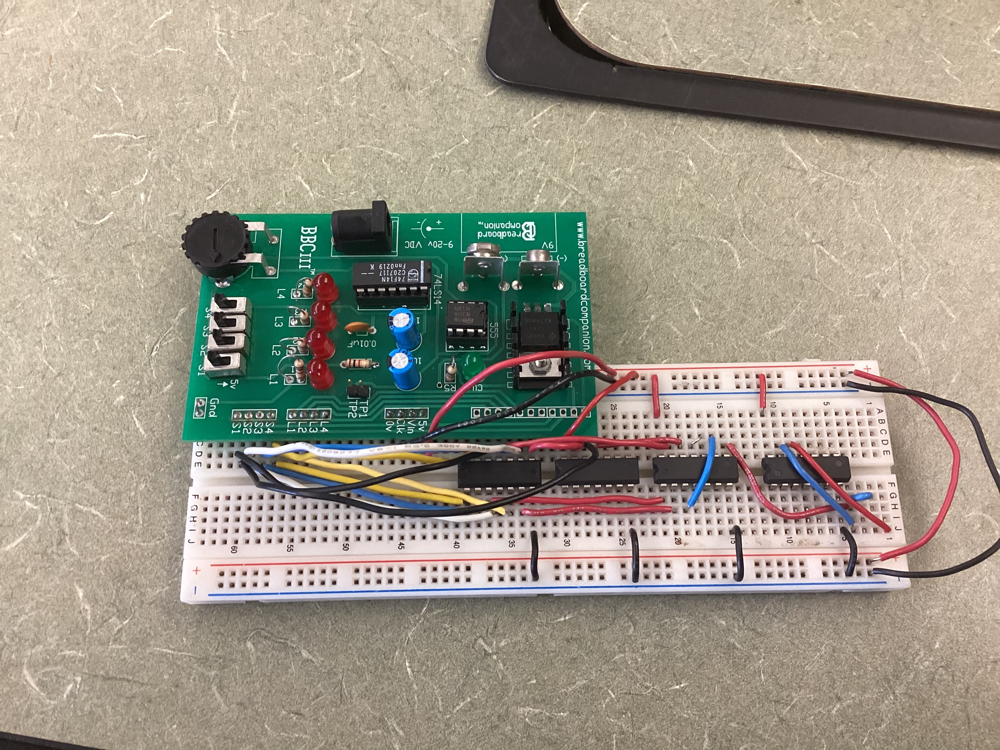
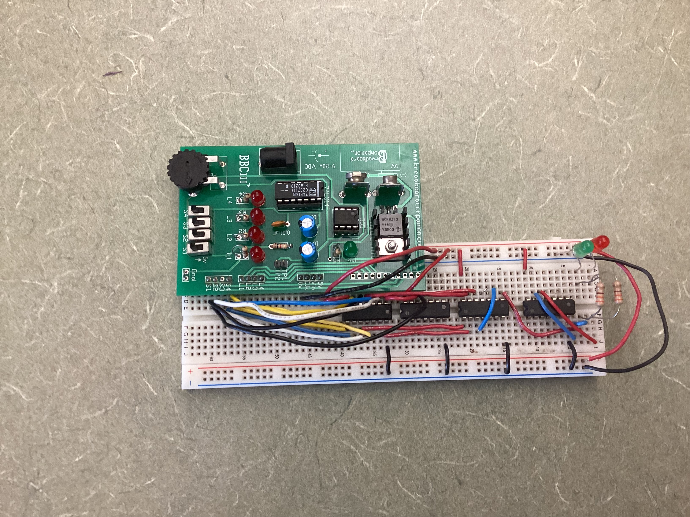
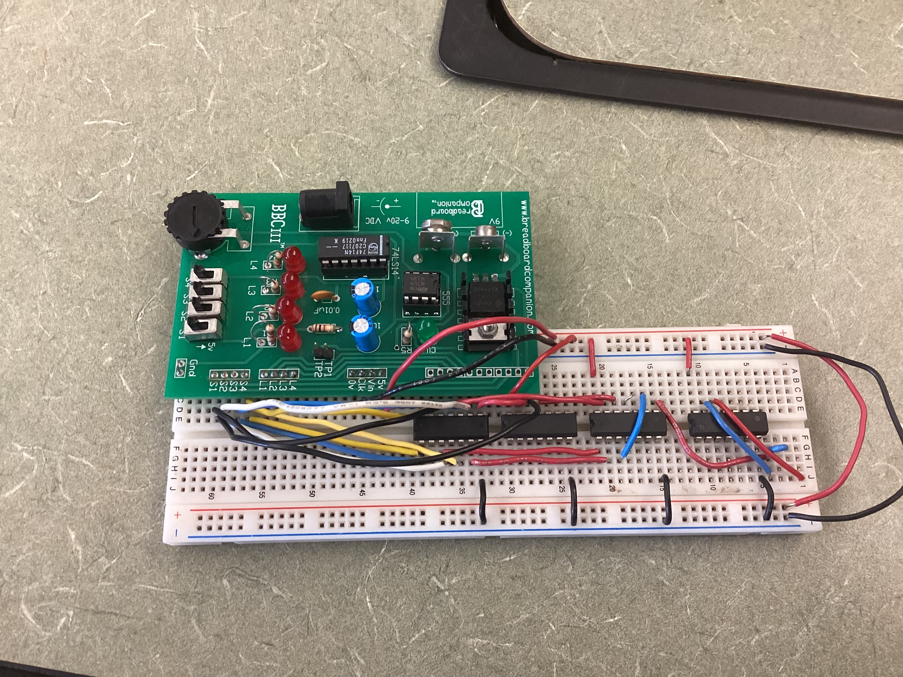
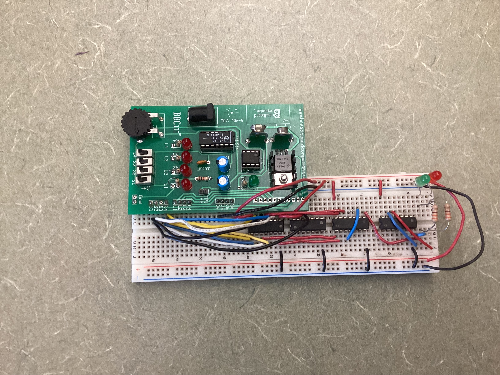

Design Process
Project Overview
In this project, I created a logic circuit that uses three inputs to display a digit of my birthday on a seven segment display. Each input switch represents either 0 or 1 in binary, giving 8 combinations together. For each binary representation of decimal numbers 0 to 7 inclusive, the next digit of my birthday is displayed. Note: I have censored my birthday for my privacy. Anything drawn over in blue is hidden.
There were multiple constraints and limitations to this project. I had to use a cathode seven segment display, meaning segments are on when connected to 5V (HIGH) and the display itself is grounded (LOW). Additionally, I had to use 220 ohm current limiting resistors in the CAD design as the seven segment display could not handle 5V directly per LED. Also, this is a seven segment display so no fancy text can be created, only digits. Lastly, the input must be in the form of three on/off continuous switches, which means the user must know how to use binary numbers.
Truth Table
Seven segment displays (SSD) are divided into seven lights that are either on or off. They can display all digits, and some letters, but only one character at a time. In this project, each of the three input switches (X, Y, and Z) controls all segments to turn some on or some off, depending on the combination of switches. Segments are labled A to G (7 segments), and each have separate conditions under which they are on. Below is a truth table to show under which conditions each segment of the SSD will be on.

There are columns A through G, each representing a segment as seen in the other image. Inputs are the X, Y, and Z switches. For example, a zero requires that all segments are on except for G (the center segment).
K-Mapping and Simplification
NI MultiSim CAD Design
Breadboarding
Bill of Materials
This is the list of all the components used in the simplified circuit on a breadboard.
| Component | Quantity |
| 74LS08 2-input AND Gate | 2 |
| 74LS32 2-input OR Gate | 1 |
| 74LS04 NOT/inverter Gate | 1, OPTIONAL |
| Red LED | 1, OPTIONAL |
| Green LED | 1 |
| 330 Ohm Resistor | 2, 1 is optional for red LED |
| Wires | About 30 |
Conclusion
 



Creating the Most Efficient Circuit